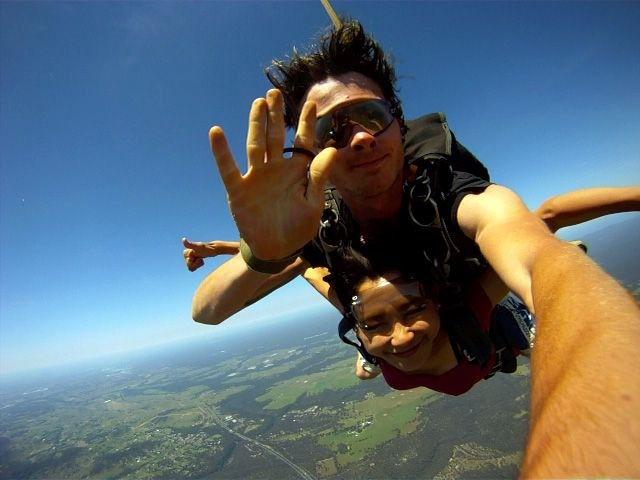

Wed, 04 Jan 2012 16:15:30 · australia · sydney · skydiving · adrenalinejunkie · adventure
mason and i pose for the camera while free falling

Mason and I pose for the camera while free-falling from 14.000ft at 220km/hr – Off the coast in the far horizon you can see the Blue Mountain. It was beautiful up there. – I’ve decided to skydive with my mate, Mason, to celebrate the passing of a dear friend. – Here’s to Zach, my dearest mate and my better-half. You will be missed, m'dear.